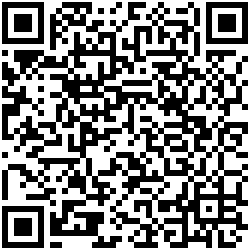

ler o telúrico do objeto-livro: abrir as portas ao inesperado; descobrir sem desvelar. ler o livro como coisa viva, como cúmplices em conspiração. buscar o fulgor perdido em meio ao consumo esvaziado. leitura e celebração do despercebido. é revista, clube do livro, espaço de abertura, num tempo que não o das notícias; mediação de quem vai e volta em vereda mensageira, entreveredas. desbravar a mata fechada que ainda há nessa linguagem rebenta em solo brasileiro; massayó, iauaretê, uirapuru. ler a língua nos usos, nas plantas, nas águas, na terra, no vento. ler na língua os mistérios dela mesma, brasileira.

contato
redemunhosredemunhos@gmail.com
editoria
lenine oliveira
arte
izabella santos
site
joão lucas, lenine oliveira
funcionamos sem suporte ou finalidade financeira, caso queira apoiar nossa continuidade
